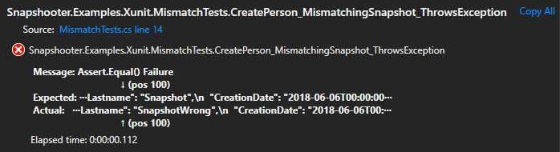

Snapshot Mismatch Handling
If a result of a test does not match with the stored snapshot, then we call it a snapshot mismatch. This means, that something has been changed in the test result and has to be verified.
In this case the current test will fail and an error message with the exact
position of the mismatching value will be shown. In addition, the mismatching
test result will be saved as a snapshot in the folder __mismatch__ within the
__snapshots__ folder.
A mismatching snapshot will always be saved in the
__snapshots__\__mismatch__folder.
Both snapshots have to be compared with each other and it has to be decided if the new test result shall be accepted or rejected.
Mismatch Error Message
If a snapshot mismatch happens, then the test will fail and report in an error message, which field at which position has been mismatching.
Example:

Compare Snapshot File
The new mismatching test result will also be saved as a snapshot in the
__snapshots__\__mismatch__ folder with the same name as the original snapshot.
Snapshooter.Examples.Xunit.csproj
│
├── __snapshots__
│ ├── __mismatch__
│ │ └── MismatchTests.MismatchingSnapshot_ThrowsException.snap --> Mismatch
│ └── MismatchTests.MismatchingSnapshot_ThrowsException.snap --> Original
│
└── MismatchTests.cs
This gives you the possibility, to simply compare the two mismatching snapshots with each other. For the snapshot file compare you can use any third party file comparison tool you like.
Accept or Reject
Accept
If the new mismatching snapshot is right and shall be accepted as the new
original snapshot, then only move the snapshot from the __mismatch__ folder
to the parent folder __snapshots__ and overwrite the existing original
snapshot.
As soon as the snapshots match again, the __mismatch__ folder and its
mismatching snapshot will automatically be removed by the Snapshooter
during the next test execution.
Reject
If the new mismatching snapshot is wrong and the existing original snapshot is still right, then you have to check your code..... The test will only pass if the snapshots match again.
As soon as the snapshots match again, the __mismatch__ folder and its
mismatching snapshot will automatically be removed by the Snapshooter
during the next test execution.